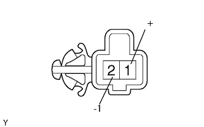
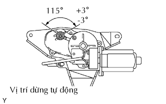

MÔTƠ GẠT NƯỚC PHÍA SAU > KIỂM TRA |
| 1. KIỂM TRA CỤM MÔTƠ GẠT NƯỚC SAU |
|  |
Kiểm tra hoạt động của gạt nước.
Nối cực dương (+) ắc quy vào cực 1 (+) và cực âm (-) ắc quy vào cực 2 (-), và kiểm tra rằng môtơ hoạt động.
Kiểm tra hoạt động dừng tự động.
Nối cực dương (+) ắc quy vào cực 1 (+) và cực âm (-) ắc quy vào cực 2 (-). Với môtơ đang quay, tháo cực ra khỏi cực 1 (+) để dừng hoạt động của môtơ gạt nước ở vị trí dừng tự động.
|  |
Kiểm tra rằng môtơ tự động ngừng ở vị trí ngừng tự động.